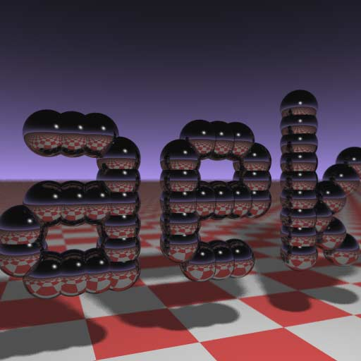

Chris Donnelly
C++ Engine Developer (Systems) in Frankfurt Am Main, Germany
(small enough to fit on a business card)
Based on a great article by Fabien Sanglard, where he analyses the answer to a 1984 comp.graphics challenge set by Paul Heckbert,
this mini-project gives a unique opportunity to tinker with a tiny and efficient raytracer, designed to be as small as possible.
The final output from the raytracer, with edited colours, name and resolution (full resolution)
The original code (expanded for readability, highlighted thanks to hilite.me):
#include <stdlib.h> // card > aek.ppm #include <stdio.h> #include <math.h> typedef int i; typedef float f; struct v { f x,y,z; v operator+(v r){ return v(x+r.x,y+r.y,z+r.z); } v operator*(f r) { return v(x*r,y*r,z*r); } f operator%(v r) { return x*r.x+y*r.y+z*r.z; } v(){} v operator^(v r){ return v(y*r.z-z*r.y,z*r.x-x*r.z,x*r.y-y*r.x); } v(f a,f b,f c){ x=a;y=b;z=c; } v operator!(){ return*this*(1/sqrt(*this%*this)); } }; i G[]={ 247570,280596,280600,249748,18578,18577,231184,16,16 }; f R(){ return(f)rand()/RAND_MAX; } i T(v o,v d,f&t,v&n) { t=1e9; i m=0; f p=-o.z/d.z; if(.01<p) t=p, n=v(0,0,1), m=1; for(i k=19;k--;) for(i j=9;j--;) if(G[j]&1<<k){ v p=o+v(-k,0,-j-4); f b=p%d,c=p%p-1,q=b*b-c; if(q>0){ f s=-b-sqrt(q); if(s<t&&s>.01)t=s,n=!(p+d*t),m=2; } } return m; } v S(v o,v d) { f t; v n; i m=T(o,d,t,n); if(!m)return v(.7,.6,1)*pow(1-d.z,4); v h=o+d*t,l=!(v(9+R(),9+R(),16)+h*-1),r=d+n*(n%d*-2); f b=l%n; if(b<0||T(h,l,t,n))b=0; f p=pow(l%r*(b>0),99); if(m&1){ h=h*.2; return((i)(ceil(h.x)+ceil(h.y))&1?v(3,1,1):v(3,3,3))*(b*.2+.1); } return v(p,p,p)+S(h,r)*.5; } i main() { printf("P6 512 512 255 "); v g=!v(-6,-16,0), a=!(v(0,0,1)^g)*.002,b=!(g^a)*.002,c=(a+b)*-256+g; for(i y=512;y--;) for(i x=512;x--;){ v p(13,13,13); for(i r=64;r--;){ v t=a*(R()-.5)*99+b*(R()-.5)*99; p=S(v(17,16,8)+t,!(t*-1+(a*(R()+x)+b*(y+R())+c)*16))*3.5+p; } printf("%c%c%c",(i)p.x,(i)p.y,(i)p.z); } }
The output (stdout) is piped to a PPM image. Converted to JPEG:
The output image in JPEG (original image is in PPM format)
So I decided to take a look at some of the workings, and change a few things.
Platform used: IBM PC Compatible, running Windows 10 64-bit, build 1803 and WSL with build packages.
The 'floor' is found in the raytracer by measuring downward-pointing rays. The texture is created by the following code section (Lines 91-94):
if(m&1){ h=h*.2; return((i)(ceil(h.x)+ceil(h.y))&1?v(3,1,1):v(3,3,3))*(b*.2+.1); }
This code measures incoming values and produces an output of one of two colours based on the condition ceil(h.x)+ceil(h.y))&1. Outgoing values (vectors) are modified versions of the RGB triplets (3,1,1) and (3,3,3). These values can be changed to represent the desired (#R,#G,#B) pixels.
The image dimensions are used several times across the program; it sets the image file dimensions, and defines the horizontal and vertical count of rays used (although the amount ogf rays cast is not horizontal × vertical - 64 rays are cast per pixel for smoothing etc).
The first reference to image dimensions is at line 101:
printf("P6 512 512 255 ");This line prints the header to the PPM image file - the image is stored in single byte-per-channel format (R,G,B) using the P6 identifier. The horizontal and vertical resolutions are then listed (separated by spaces) - in the original code, the image is 512 × 512. Next, the upper value limit for each colour channel is stated (255 - one unsigned byte).
The resolution of the 'virtual screen' for rays is set by the following lines (105-107):
for(i y=512;y--;) for(i x=512;x--;){
Obviously, this is a nested series of loops, carrying out the ray calculation x and y times, creating a two-dimensional range of width × height.
Note that the samples-per-pixel value (for smoothing/blur/soft shadowing) can be changed at line 111:
for(i r=64;r--;){
The name is the main focus of the scene -- created from a number of reflective spheres, based on a series of bit masks in the code. These values are found in an array at line 40:
i G[]={ 247570,280596,280600,249748,18578,18577,231184,16,16 };
Also, the 'length' of each bit mask (in this case, 19 bits) is defined at line 51:
for(i k=19;k--;)
The count of values (bit masks) are defined in the for loop at line 53:
for(i j=9;j--;)
So let's look at what makes this array special - bit values (Note: I've used 32 bits for illustration):
| Index | Value | Value (little-endian) |
|---|---|---|
| 0 | 247570 | 00000000000000111100011100010010 |
| 1 | 280596 | 00000000000001000100100000010100 |
| 2 | 280600 | 00000000000001000100100000011000 |
| 3 | 249748 | 00000000000000111100111110010100 |
| 4 | 18578 | 00000000000000000100100010010010 |
| 5 | 18577 | 00000000000000000100100010010001 |
| 6 | 231184 | 00000000000000111000011100010000 |
| 7 | 16 | 00000000000000000000000000010000 |
| 8 | 16 | 00000000000000000000000000010000 |
We can replace the value 0 bits with ░ and value 1 bits with ▓ to make it easier to see:
░░░░░░░░░░░░░░▓▓▓▓░░░▓▓▓░░░▓░░▓░ (247570) ░░░░░░░░░░░░░▓░░░▓░░▓░░░░░░▓░▓░░ (280596) ░░░░░░░░░░░░░▓░░░▓░░▓░░░░░░▓▓░░░ (280600) ░░░░░░░░░░░░░░▓▓▓▓░░▓▓▓▓▓░░▓░▓░░ (249748) ░░░░░░░░░░░░░░░░░▓░░▓░░░▓░░▓░░▓░ (18578) ░░░░░░░░░░░░░░░░░▓░░▓░░░▓░░▓░░░▓ (18577) ░░░░░░░░░░░░░░▓▓▓░░░░▓▓▓░░░▓░░░░ (231184) ░░░░░░░░░░░░░░░░░░░░░░░░░░░▓░░░░ (16) ░░░░░░░░░░░░░░░░░░░░░░░░░░░▓░░░░ (16)
A quick vertical flip (for the sake of human viewing) gives the following:
░░░░░░░░░░░░░░░░░░░░░░░░░░░▓░░░░ (16) ░░░░░░░░░░░░░░░░░░░░░░░░░░░▓░░░░ (16) ░░░░░░░░░░░░░░▓▓▓░░░░▓▓▓░░░▓░░░░ (231184) ░░░░░░░░░░░░░░░░░▓░░▓░░░▓░░▓░░░▓ (18577) ░░░░░░░░░░░░░░░░░▓░░▓░░░▓░░▓░░▓░ (18578) ░░░░░░░░░░░░░░▓▓▓▓░░▓▓▓▓▓░░▓░▓░░ (249748) ░░░░░░░░░░░░░▓░░░▓░░▓░░░░░░▓▓░░░ (280600) ░░░░░░░░░░░░░▓░░░▓░░▓░░░░░░▓░▓░░ (280596) ░░░░░░░░░░░░░░▓▓▓▓░░░▓▓▓░░░▓░░▓░ (247570)
In short, each bit represents the presence of a sphere in an evenly-spaced grid. The integer values in G (and the bit count) can be replaced to give other results, for example the following code...
i G[]={0,412206,608802,543270,13,543272,553390,606208,409632,};
...produces the following result (again, with a vertical flip):
░░░░░░░░░░░░░░░░░░░░░░░░░░░░░░░░ ░░░░░░░░░░░░░▓▓░░▓░░░░░░░░▓░░░░░ ░░░░░░░░░░░░▓░░▓░▓░░░░░░░░░░░░░░ ░░░░░░░░░░░░▓░░░░▓▓▓░░░▓▓░▓░▓▓▓░ ░░░░░░░░░░░░▓░░░░▓░░▓░▓░░░▓░▓░░░ ░░░░░░░░░░░░▓░░░░▓░░▓░▓░░░▓░░▓▓░ ░░░░░░░░░░░░▓░░░░▓░░▓░▓░░░▓░░▓▓░ ░░░░░░░░░░░░▓░░▓░▓░░▓░▓░░░▓░░░▓░ ░░░░░░░░░░░░░▓▓░░▓░░▓░▓░░░▓░▓▓▓░
Some small changes can make some excellent images thanks to some great, compact code, which is also wonderully customizable (also thanks to procedural nature of the program).